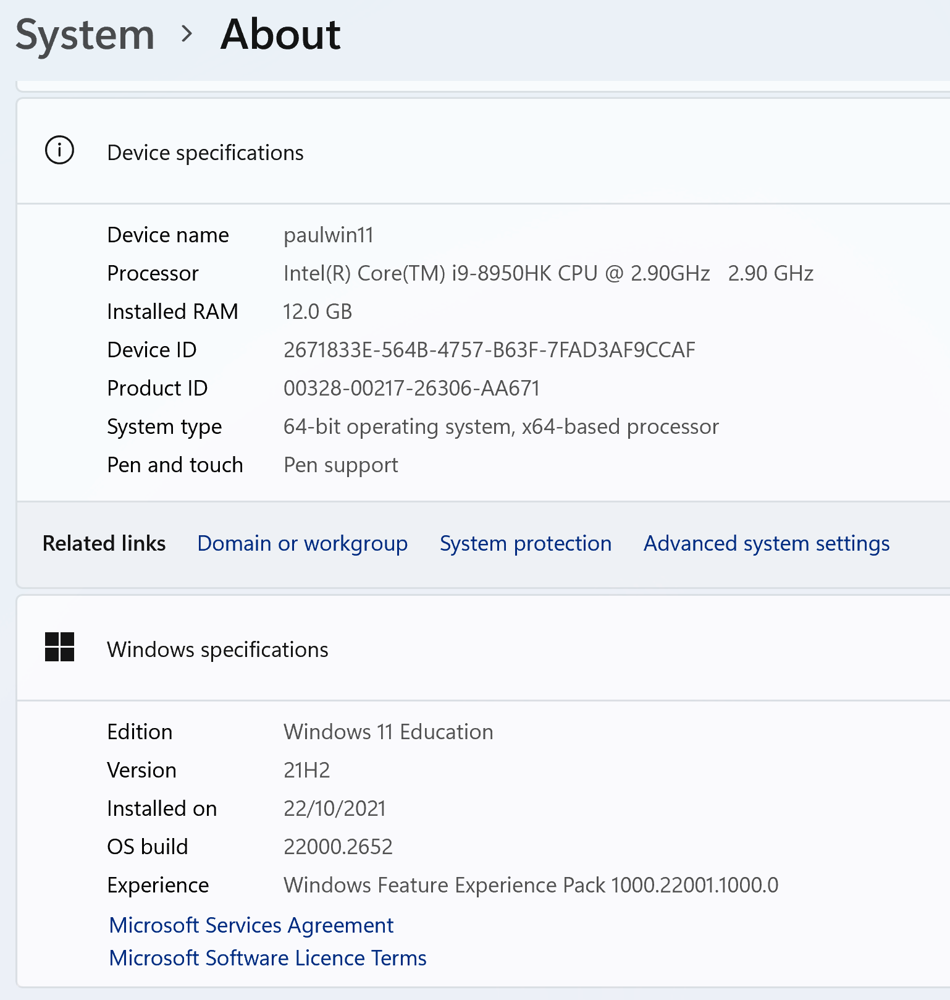
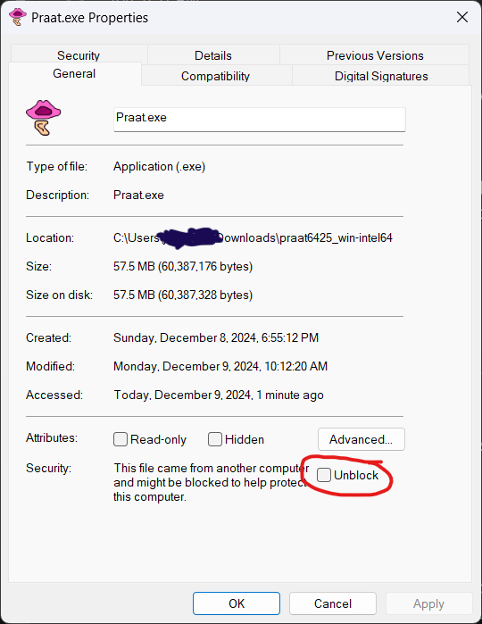
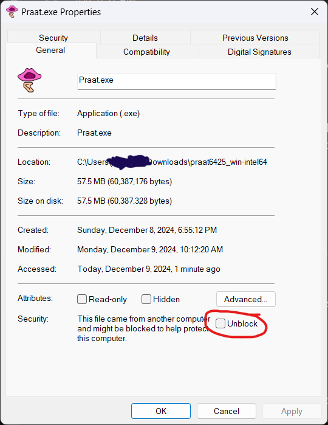

|
To download the latest version of the Windows (7, 8, 10, 11...) edition of Praat, download one of the following zip folders to your desktop:
As a Praat user you will want to know what type of processor is inside your computer. Knowing this is relevant for installing all academic software, i.e. not only Praat but also the most used statistics software (R) or the most used scripting language (Python). In general, knowing your processor type is relevant for any software that you download from outside the Microsoft Store.
To find your processor type, go to Start -> Settings -> System (the choice at the top) -> About (the choice at the bottom). It is most likely that you will see something like one of the following two tables:

The table on the left is what you get if you have an Intel64 processor (also called x64, AMD64, x86_64...): under “System type” you see that the processor is “x64-based” (the name of the processor often has an “i7” or “i9” in it, as here). The table on the right is what you get if you have an ARM64 processor (also called Aarch64): under “System type” you see that the processor is “ARM-based” (here, the name of the processor itself tells us that this is an Apple Silicon chip, which is one of the ARM64 types).
If your computer has a processor that is of Intel64 type (these are by far the most common in 2024), then only Praat’s Intel64 edition will work; if your computer has an ARM64 processor (these are the future, because of their longer battery power on laptops), then choose Praat’s ARM64 edition (the Intel64 edition will also work, but the ARM64 edition will work much faster).
The third possibility is that you have an old Intel32 computer, where the “System type“ is something like “32-bit operating system, x86-based processor”; in that case, you can only use Praat’s Intel32 edition.
After downloading the right edition, you will see the zip folder as a folder icon with a zipper on it (or as some other icon if you installed a special zip program such as WinZip).
When you double-click the zip folder, a file called Praat or Praat.exe will appear. This is the Praat program. You can drag it out of the zip folder to any location on your hard disk (so that you can use Praat even if your system administrator does not allow you to install other programs!).
To start up the Praat program, just double-click it. If you use Praat for the first time, choose Intro from the Help menu.
If you have trouble starting Praat for the first time:
To protect you against harmful software, Windows enforces increasingly severe security measures,
initially trusting only apps that you downloaded from the Microsoft Store.
This is a good thing, but it does make it increasingly difficult to start up reliable applications
that you download from outside the Microsoft Store, such as Praat.
Your Windows computer can throw a variety of messages at you:
 

For best results with phonetic characters in the TextGrid and Picture windows, you should also download the Charis and/or the Doulos SIL font, which were created by the Summer Institute of Linguistics. To install them, first download their zip-files:
Double-click the zip folders. You will see a folder called Charis-7.000 or DoulosSIL-7.000; drag it out of the zip folder to your desktop. When you open the Charis-7.000 or DoulosSIL-7.000 folders, you will see TrueType font files such as Charis-Regular(.ttf), Charis-Bold(.ttf), Charis-Italic(.ttf), Charis-BoldItalic(.ttf), and DoulosSIL-Regular(.ttf). To install a font, double-click its file and choose Install.
When you use Praat, you will work with many files with the same base name, such as hello.wav, hello.TextGrid, and hello.Pitch. On your computer, these might all look like being just called hello. This is confusing, especially when you open files in Praat with Read from file... or try to save a file with one of the Save commands. Our advice is that you make all extensions (such as .wav, .TextGrid and .Pitch) visible by going to Windows Explorer (not the internet browser, but the file viewer), then click on View, then Show (or Show/Hide), then check File name extensions.
To get Praat in your Start menu: right-click on the Praat icon and choose "Pin to Start".
To get a shortcut to Praat on the Desktop: keep the Alt key pressed and drag the Praat icon to the Desktop.
To keep Praat in your taskbar even after Praat closes: start up Praat, right-click the Praat icon in the taskbar and choose "Pin to taskbar".
To run Praat from a console window (the “command prompt”), write a Praat script and specify that script on the command line, optionally with arguments, e.g.:
Praat.exe --run playsinewave.praat 377 0.9
For details see Calling from the command line in the Scripting manual.
On a modern computer you would use praat6438_win-intel64.zip, or praat6438_win-arm64.zip, as suggested above. If that does not work on your computer, you can probably use praat6438_win32.zip (as suggested above), or try an older version: